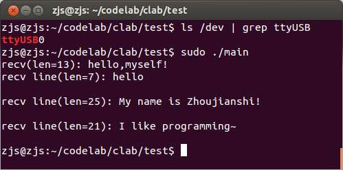

最近要使用树莓派操作A6模块。A6模块是一个使用AT指令进行操作的GPRS模块，通信方式是串口。所以树莓派插一个USBTTL就可以操作A6模块了。
==================阶段一：串口初始化================
在使用串口之前，首先是打开设备文件（比如/dev/ttyUSB0），然后配置波特率、数据位、起始位、校验位、流控等参数。
打开文件的方式就是使用通用的open函数，比如：
int fd=open("/dev/ttyUSB0",O_RDWR|O_NOCTTY|O_NDELAY);
选项O_RDWR表示可读可写，O_NOCTTY表示通过该串口读到的数据不要当作linux命令来执行，O_NDELAY表示即使对端还没准备好也直接打开串口。O_NDELAY这个参数是这么理解的：在台式机后面有自带的25针串口或者9针串口，除了我们熟知的TX和RX外，还有RTS、CTS等等其他引脚，通常是用于同步数据的。比如我们使用串口打印机，那么肯定希望open()调用能够阻塞，直到打印机的串口准备就绪。但在只使用TX和RX的嵌入式领域，如果不使用O_NDELAY参数，那么open()将永远阻塞。
在Linux上，对串口进行配置用的是termios.h中定义的结构体struct termios。比如我们要配置串口为最常用的9600bps、8个数据位、无校验位、1个停止位、无流控方式，那么可以这么设置termios结构体：
struct termios options; //清空所有属性 memset(&options,0,sizeof(options)); //设置输入速率为9600 cfsetispeed(&options,B9600); //设置输出速率为9600 cfsetospeed(&options,B9600); //8个数据位 options.c_cflag|=CS8; //无校验位（其实这句可以不写，因为已经全部清0，只需要设置为1的位） options.c_cflag&=~PARENB; //1个停止位（其实这句可以不写，因为已经全部清0，只需要设置为1的位） options.c_cflag&=~CSTOPB; //超时时间为0.1秒 options.c_cc[VTIME]=1; //每次接收长度为1个字节 options.c_cc[VMIN]=1;
关于波特率：Linux下的波特率有几个常量来表示，有B2400、B4800、B9600、B19200、B38400、B57600、B115200，当然还有更多。然后使用cfsetispeed()和cfsetospeed()来设置options结构体。至于是否能够使用任意的波特率，这个我还没研究过。
关于数据位：除了CS8之外，还有CS5、CS6和CS7，共四种数据位。使用方法就是把某个CSx“或”到c_cflag中就行。
关于校验位：校验位有两方面的参数。首先是是否使能校验位。如果要使能校验位，则
options.c_cflag|=PARENB;
否则就是
options.c_cflag&=~PARENB;
使能校验位的话，还有再设置是奇校验还是偶校验。如果是奇校验，那么
options.c_cflag|=PARODD;
如果是偶校验，那么
options.c_cflag&=~PARODD;
关于停止位：停止位有两种，要么1个停止位，要么2个停止位。如果是一个停止位，那么就
options.c_cflag&=~CSTOPB;
如果是两个停止位，那么
options.c_cflag|=CSTOPB;
另外，还有一些参数是控制数据流的，我截了《linux 下串行口超时设置 》（在此感谢作者newkelt）的代码：
//disable software flow control options.c_iflag&=~(IXON|IXOFF|IXANY); //raw type input options.c_lflag&=~(ICANON|ECHO|ECHOE|ISIG); //raw type output options.c_oflag&=~OPOST; //disable 0d->0xa mapping options.c_iflag&=~(INLCR|ICRNL|IGNCR); options.c_oflag&=~(ONLCR|OCRNL);
好在这些东西在大多数时候都是关闭的，所以直接把struct termios清空就行了。
最后，就是通过tcsetattr()函数，把构建好的struct termios作用到文件描述符fd之上：
tcsetattr(fd,TCSANOW,&options);
当然，为了保险起见，还需要清空当前的缓冲区：
tcflush(fd,TCIOFLUSH);
至此，串口初始化完毕。
===================阶段二：收发数据=================
收发数据说简单可以很简单，直接调用read()和write()系统调用就行了。
发送数据的时候，使用write()函数没有任何问题。但是接收数据的时候，使用read()函数可能会丢失数据。这是因为内核分配给串口的缓存区是有限的，通常只有几字节，如果read()不能够及时读走数据，那么就可能丢失之前的数据。但是呢，我又希望对上层应用而言，串口就像一个TCP socket，或者更加高级，即使我不立刻去读，接收到的数据也能存在于一个好像无穷长的流里面。
因此我想到了多线程。我创建一个读取线程，在后台每1ms读取一次，然后把读到的数据加入一个队列。上层应用只要操作这个队列，把它当作一个流就行了。当然，这里面还有考虑线程互斥的问题，以保证对队列操作的原子性。
除了最基本的读写方法，我还提供了比较高级的方法，比如一直读直到遇到某个特定字符串或超时（可以用作类似与readLine()这样的功能，但是更加强大）。具体看下面的代码吧。
==================阶段三：完整代码=================
代码总共6个文件，分别是Timestamp.h、Timestamp.cpp、Stream.h、Stream.cpp、Serial.h和Serial.cpp。Timestamp提供了一个用于获取毫秒级时间戳的方法。Stream封装了一个流，本质上就是一个能够自动扩容的环形队列。Serial就是最后需要的串口类。千言万语不及代码～
Timestamp.h：
//本文件定义一个毫秒级的时间戳工具类
#ifndef TIMESTAMP_H
#define TIMESTAMP_H
//时间戳类型
typedef long long timestamp_t;
class Timestamp
{
public:
//获取以毫秒计的时间戳
static timestamp_t now();
};
#endif
Timestamp.cpp：
#include "Timestamp.h"
#include <time.h>
#include <sys/time.h>
timestamp_t Timestamp::now()
{
struct timeval tv;
gettimeofday(&tv,0);
timestamp_t time=(timestamp_t)tv.tv_sec*1000+tv.tv_usec/1000;
return time;
}
Stream.h：
//本文件实现一个字符流
#ifndef STREAM_H
#define STREAM_H
class Stream
{
private:
//缓冲区
char* buffer;
//缓冲区容量
int capacity;
//流的开头
int start;
//流的长度
int length;
public:
//初始化一个流，参数为：初始容量
Stream(int initCapacity=16);
//清理
~Stream();
//获取流的长度
int getLength();
//向流的末尾增加一字符
void append(char aChar);
//向流的末尾增加多个字符
void append(const char* buf,int len);
//查看流的第一个字符，如果长度为0则返回0
char peek();
//查看流开头的多个字符，返回实际查看到的长度
int peek(char* buf,int len);
//取出流的第一个字符，如果长度为0则返回0
char take();
//取出流开头的多个字符，返回实际取出的长度
int take(char* buf,int len);
private:
//扩大容量至两倍
void expand();
};
#endif
Stream.cpp：
#include "Stream.h"
Stream::Stream(int initCapacity)
{
buffer=new char[initCapacity];
capacity=initCapacity;
start=0;
length=0;
}
Stream::~Stream()
{
delete[] buffer;
}
int Stream::getLength()
{
return length;
}
void Stream::append(char aChar)
{
if(length>=capacity)
expand();
int pos=start+length;
if(pos>=capacity)
pos-=capacity;
buffer[pos]=aChar;
length++;
}
void Stream::append(const char* buf,int len)
{
for(int i=0;i<len;i++)
append(buf[i]);
}
char Stream::peek()
{
if(length==0)
return 0;
return buffer[start];
}
int Stream::peek(char* buf,int len)
{
if(len>length)
len=length;
for(int i=0;i<len;i++)
{
int pos=start+i;
if(pos>=capacity)
pos-=capacity;
buf[i]=buffer[pos];
}
return len;
}
char Stream::take()
{
if(length==0)
return 0;
char aChar=buffer[start];
start++;
length--;
if(start>=capacity)
start-=capacity;
return aChar;
}
int Stream::take(char* buf,int len)
{
if(len>length)
len=length;
for(int i=0;i<len;i++)
buf[i]=take();
return len;
}
void Stream::expand()
{
int newCapacity=capacity*2;
char* newBuf=new char[newCapacity];
int newLength=length;
take(newBuf,newLength);
delete[] buffer;
buffer=newBuf;
capacity=newCapacity;
start=0;
length=newLength;
}
Serial.h：
//本文件定义了一个串口类
#ifndef SERIAL_H
#define SERIAL_H
#include "Stream.h"
#include <pthread.h>
//串口类
class Serial
{
public:
//无校验
static const int PARITY_NONE=0;
//奇校验
static const int PARITY_ODD=1;
//偶校验
static const int PARITY_EVEN=2;
//函数成功
static const int OK=1;
//设备未找到
static const int DEV_NOT_FOUND=-1;
//不支持该波特率
static const int BAUD_NOT_SUPPORTED=-2;
//不支持该数据位数
static const int DATABITS_NOT_SUPPORTED=-3;
//不支持该校验模式
static const int PARITYMODE_NOT_SUPPORTED=-4;
//不支持该停止位数
static const int STOPBITS_NOT_SUPPORTED=-5;
//未知配置错误
static const int CONFIG_FAIL=-6;
//创建线程出错
static const int NEW_THREAD_FAIL=-7;
//成功读到结尾符
static const int READ_END=1;
//读取超时
static const int READ_TIMEOUT=-1;
//读取时缓冲区满
static const int READ_BUFFER_FULL=-2;
private:
//串口设备文件描述符
int fd;
//字符流
Stream stream;
//后台接收线程
pthread_t tid;
//对字符流加的锁
pthread_mutex_t mutex;
public:
Serial();
~Serial();
//开启串口，参数为：设备名、波特率、数据位数、校验模式、停止位数，返回函数执行结果
int open(const char* dev,int baud,int dataBits,int parityMode,int stopBits);
//关闭串口
int close();
//写串口，参数为：数据、长度，返回实际写入长度
int write(const char* data,int len);
//获取可读长度
int available();
//读串口，但不移除数据，返回实际读取长度
int peek(char* buf,int len);
//读串口，直到收到预期长度的数据或超时，参数为：接收缓冲区、预期接收长度、超时（毫秒）,返回实际读取长度
int read(char* buf,int len,int timeout);
//读串口，直到读到预期的结尾符或缓冲区满或超时，参数为：接收缓冲区、最大长度、预期结尾符、超时（毫秒）、实际接收长度，返回READ_END、READ_TIMEOUT或READ_BUFFER_FULL
int read(char* buf,int maxLen,const char* end,int timeout,int* recvLen);
private:
//将数字型波特率转化为系统调用参数
int transformBaud(int baud);
//将数字型数据位数转化为系统调用参数
int transformDataBits(int dataBits);
long long getTimestamp();
//判断字符串str是否以字符串end结尾
bool endsWith(const char* str,int strLen,const char* end,int endLen);
//后台接收线程函数
friend void* receiveThread(void* arg);
};
#endif
Serial.cpp：
#include "Serial.h"
#include "Timestamp.h"
#include <unistd.h>
#include <fcntl.h>
#include <termios.h>
#include <string.h>
#include <sys/stat.h>
#include <sys/types.h>
Serial::Serial():stream()
{
pthread_mutex_init(&mutex,0);
}
Serial::~Serial()
{
close();
}
void* receiveThread(void* arg)
{
Serial* serial=(Serial*)arg;
char buf[1024];
while(true)
{
pthread_testcancel();
int len=read(serial->fd,buf,sizeof(buf));
if(len>0)
{
pthread_mutex_lock(&(serial->mutex));
serial->stream.append(buf,len);
pthread_mutex_unlock(&(serial->mutex));
}
usleep(1000);
}
}
int Serial::open(const char* dev,int baud,int dataBits,int parityMode,int stopBits)
{
struct termios options;
bzero(&options,sizeof(options));
int baudT=transformBaud(baud);
if(baudT<0)
return BAUD_NOT_SUPPORTED;
cfsetispeed(&options,baudT);
cfsetospeed(&options,baudT);
int dataBitsT=transformDataBits(dataBits);
if(dataBitsT<0)
return DATABITS_NOT_SUPPORTED;
options.c_cflag|=dataBitsT;
if(parityMode==PARITY_ODD)
{
options.c_cflag|=PARENB;
options.c_cflag|=PARODD;
}
else if(parityMode==PARITY_EVEN)
options.c_cflag|=PARENB;
else if(parityMode!=PARITY_NONE)
return PARITYMODE_NOT_SUPPORTED;
if(stopBits==2)
options.c_cflag|=CSTOPB;
else if(stopBits!=1)
return STOPBITS_NOT_SUPPORTED;
options.c_cc[VTIME]=1;
options.c_cc[VMIN]=1;
fd=::open(dev,O_RDWR|O_NOCTTY|O_NDELAY);
if(fd<0)
return DEV_NOT_FOUND;
if(tcsetattr(fd,TCSANOW,&options))
return CONFIG_FAIL;
if(tcflush(fd,TCIOFLUSH))
return CONFIG_FAIL;
if(pthread_create(&tid,0,receiveThread,this)!=0)
return NEW_THREAD_FAIL;
return OK;
}
int Serial::close()
{
if(fd>=0)
{
::close(fd);
pthread_cancel(tid);
pthread_mutex_destroy(&mutex);
fd=-1;
}
}
int Serial::write(const char* data,int len)
{
return ::write(fd,data,len);
}
int Serial::available()
{
int len=stream.getLength();
return len;
}
int Serial::peek(char* buf,int len)
{
len=stream.peek(buf,len);
return len;
}
int Serial::read(char* buf,int len,int timeout)
{
timestamp_t start=Timestamp::now();
int total=0;
while(total<len)
{
pthread_mutex_lock(&mutex);
int readLen=stream.take(buf+total,len-total);
pthread_mutex_unlock(&mutex);
if(readLen>0)
total+=readLen;
timestamp_t now=Timestamp::now();
if(now>=start+timeout)
break;
usleep(1000);
}
return total;
}
int Serial::read(char* buf,int maxLen,const char* end,int timeout,int* recvLen)
{
int endLen=strlen(end);
timestamp_t start=Timestamp::now();
int total=0;
while(total<maxLen)
{
pthread_mutex_lock(&mutex);
int readLen=stream.take(buf+total,1);
pthread_mutex_unlock(&mutex);
if(readLen>0)
{
total+=readLen;
if(endsWith(buf,total,end,endLen))
{
if(recvLen!=0)
*recvLen=total;
return READ_END;
}
}
timestamp_t now=Timestamp::now();
if(now>=start+timeout)
return READ_TIMEOUT;
usleep(1000);
}
return READ_BUFFER_FULL;
}
int Serial::transformBaud(int baud)
{
int map[][2]={{2400,B2400},{4800,B4800},{9600,B9600},
{19200,B19200},{38400,B38400},{57600,B57600},
{115200,B115200}};
for(int i=0;i<sizeof(map)/sizeof(int)/2;i++)
if(map[i][0]==baud)
return map[i][1];
return -1;
}
int Serial::transformDataBits(int dataBits)
{
int map[][2]={{5,CS5},{6,CS6},{7,CS7},{8,CS8}};
for(int i=0;i<sizeof(map)/sizeof(int)/2;i++)
if(map[i][0]==dataBits)
return map[i][1];
return -1;
}
bool Serial::endsWith(const char* str,int strLen,const char* end,int endLen)
{
if(strLen<endLen)
return false;
for(int i=endLen-1;i>=0;i--)
if(end[i]!=str[strLen-endLen+i])
return false;
return true;
}
=========================阶段四：使用示例======================
编写main.c如下：
#include "Serial.h"
#include <stdio.h>
#include <string.h>
int main()
{
Serial s;
//测试open()
if(s.open("/dev/ttyUSB0",115200,8,Serial::PARITY_NONE,1)!=Serial::OK)
{
printf("Cannot open serial port!\n");
return -1;
}
//测试write和int read(char* buf,int len,int timeout);
const char* output="hello,myself!";
s.write(output,strlen(output));
char buf[1024];
int len=s.read(buf,sizeof(buf),100);
buf[len]=0;
printf("recv(len=%d): %s\n",len,buf);
//测试write和int read(char* buf,int maxLen,const char* end,int timeout,int* recvLen);
output="hello\r\nMy name is Zhoujianshi!\r\nI like programming~\r\n";
s.write(output,strlen(output));
while(s.read(buf,sizeof(buf),"\r\n",100,&len)==Serial::READ_END)
{
buf[len]=0;
printf("recv line(len=%d): %s\n",len,buf);
}
return 0;
}
依次输入如下命令：
g++ -c Timestamp.cpp -o Timestamp.o g++ -c Stream.cpp -o Stream.o g++ -c Serial.cpp -o Serial.o g++ -c main.c -o main.o g++ main.o Timestamp.o Stream.o Serial.o -lpthread -o main
插上USBTTL，用一根杜邦线把TX和RX连接起来，然后执行命令：
ls /dev | grep ttyUSB
应该能够看到/dev/ttyUSB0。然后执行命令：
sudo ./main
运行结果如下：
